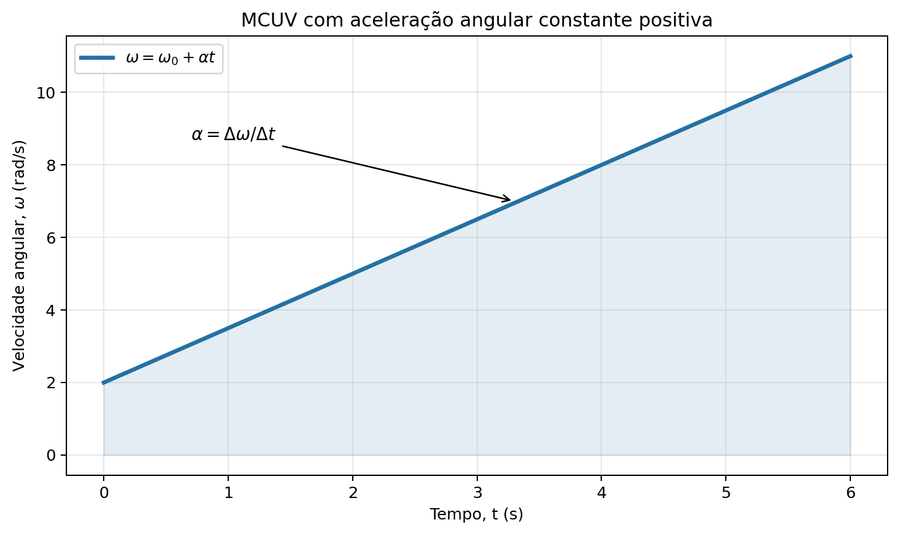
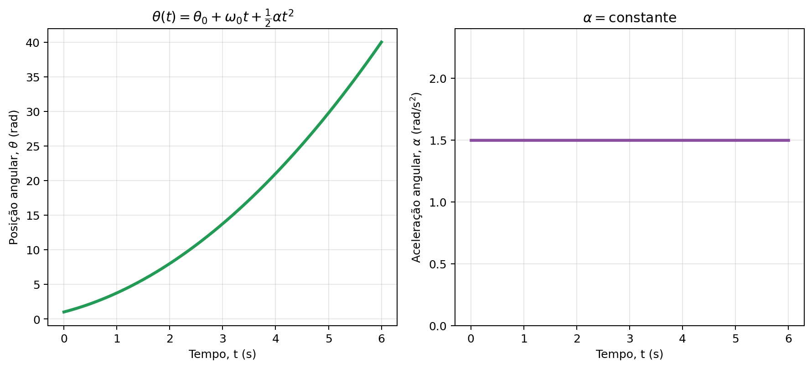
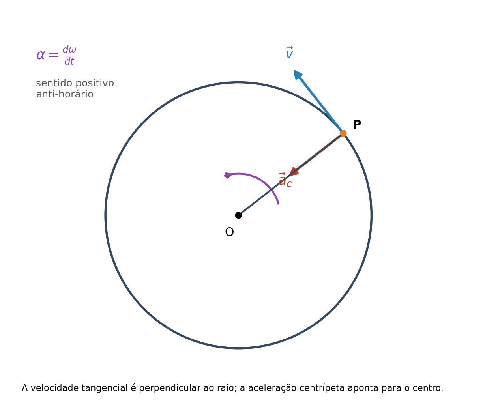

1º Ano | Aula 15: Movimento Circular Uniformemente Variado (MCUV)
📚 Resumo
O Movimento Circular Uniformemente Variado (MCUV) ocorre quando um corpo percorre uma trajetória circular com aceleração angular constante ($\alpha=\text{constante}$). A velocidade angular varia uniformemente com o tempo.
Velocidade angular: $\omega=\omega_0+\alpha t$.
Posição angular: $\theta=\theta_0+\omega_0t+\frac12\alpha t^2$.
Equação sem tempo: $\omega^2=\omega_0^2+2\alpha\Delta\theta$.
Relações lineares: $v=\omega R$, $a_t=\alpha R$ e $a_c=\frac{v^2}{R}=\omega^2R$.
As equações angulares são análogas às do MUV linear, desde que $\alpha$ seja constante e o raio $R$ permaneça fixo. A aceleração centrípeta continua existindo sempre que há movimento circular com velocidade angular diferente de zero.
📖 Movimento Circular Uniformemente Variado
1. O que é MCUV?
Um corpo realiza movimento circular quando sua trajetória é uma circunferência de raio constante. No MCU, o módulo da velocidade angular é constante. No MCUV, a velocidade angular muda ao longo do tempo, e sua taxa de variação é constante:
Assim, em intervalos de tempo iguais, a velocidade angular sofre variações iguais. O movimento pode ser acelerado ou retardado em termos de rapidez angular, dependendo dos sinais de $\omega$ e $\alpha$.
2. Grandezas angulares
Posição angular ($\theta$): indica a posição do móvel na circunferência em relação a uma direção de referência. Unidade SI: radiano (rad).
Deslocamento angular ($\Delta\theta$): $\Delta\theta=\theta-\theta_0$. Pode ser positivo ou negativo conforme o sentido escolhido.
Velocidade angular ($\omega$): taxa de variação da posição angular, $\omega=\Delta\theta/\Delta t$ para velocidade angular média. Unidade: rad/s.
Aceleração angular ($\alpha$): taxa de variação da velocidade angular, $\alpha=\Delta\omega/\Delta t$. Unidade: rad/s².
Adotaremos, nas representações, o sentido anti-horário como positivo. Essa escolha é convencional: o importante é manter a coerência dos sinais em todo o problema.
Uma volta completa corresponde a $2\pi$ rad, meia volta a $\pi$ rad e um quarto de volta a $\pi/2$ rad. Para converter graus em radianos, use $\theta(\text{rad})=\theta(^\circ)\cdot\pi/180^\circ$.
3. Equações horárias do MCUV
Como a aceleração angular é constante, podemos aplicar as equações análogas às do movimento uniformemente variado linear:
A terceira expressão é a equação de Torricelli angular e é útil quando o intervalo de tempo não é conhecido ou não é solicitado. O tempo deve ser contado a partir do instante escolhido como inicial, normalmente $t=0$.

Figura 1: No MCUV, o gráfico $\omega\times t$ é uma reta; sua inclinação representa a aceleração angular constante.

Figura 2: Para aceleração angular constante, a posição angular varia quadraticamente com o tempo e o gráfico da aceleração angular é horizontal.
4. Relação entre grandezas angulares e lineares
Para um ponto a uma distância fixa $R$ do eixo de rotação, o comprimento do arco percorrido é:
$$\Delta s=R\Delta\theta$$
Com $\theta$ em radianos, as relações entre os módulos das grandezas são:
$$v=\omega R \qquad a_t=\alpha R$$
$v$ é a velocidade tangencial (m/s), $a_t$ é a aceleração tangencial (m/s²) e $R$ é o raio (m). A aceleração tangencial altera o módulo da velocidade; sua direção é tangente à circunferência.
Mesmo que a rapidez seja constante, a direção da velocidade muda em uma trajetória circular. Por isso existe aceleração centrípeta, dirigida para o centro:
$$a_c=\frac{v^2}{R}=\omega^2R$$
No MCUV, em geral, há simultaneamente aceleração tangencial e centrípeta. Como são perpendiculares, o módulo da aceleração resultante é:
$$a=\sqrt{a_t^2+a_c^2}$$

Figura 3: A velocidade tangencial é perpendicular ao raio e a aceleração centrípeta aponta para o centro. A aceleração tangencial, quando diferente de zero, é tangente à trajetória.
5. Período, frequência e velocidade angular
O período $T$ é o tempo necessário para completar uma volta; a frequência $f$ é o número de voltas por unidade de tempo. Em qualquer instante em que se define a velocidade angular, a frequência instantânea pode ser relacionada por:
$$\omega=2\pi f \qquad (f=1/T)$$
Essas relações são especialmente simples no MCU, em que $T$ e $f$ são constantes. No MCUV, como $\omega$ varia, o intervalo entre voltas sucessivas também pode variar; portanto, não se deve tratar período e frequência como constantes ao longo do movimento. Para uma volta completa, o deslocamento angular é $2\pi$ rad.
6. Sinais: movimento acelerado e retardado
O sinal de $\alpha$ sozinho não diz se o módulo da velocidade angular aumenta ou diminui. É necessário comparar os sinais de $\omega$ e $\alpha$:
Mesmo sinal: o módulo de $\omega$ aumenta; movimento angular acelerado.
Sinais opostos: o módulo de $\omega$ diminui; movimento angular retardado, até possível parada e inversão do sentido.
Exemplo: se $\omega>0$ e $\alpha<0$, o móvel gira no sentido positivo, mas reduz sua rapidez angular. Se continuar com aceleração constante, poderá parar instantaneamente e depois girar no sentido negativo.
7. Como resolver problemas e erros comuns
Identifique o sentido positivo e mantenha a convenção de sinais.
Converta ângulos para radianos quando utilizar relações entre grandezas angulares e lineares.
Escolha a equação que contenha as grandezas conhecidas e a incógnita.
Use o raio em metros nas relações $v=\omega R$, $a_t=\alpha R$ e $a_c=\omega^2R$.
Não confunda aceleração angular ($\alpha$, rad/s²) com aceleração centrípeta ($a_c$, m/s²).
Não confunda aceleração tangencial, que altera a rapidez, com aceleração centrípeta, que altera a direção da velocidade.
O modelo pressupõe raio fixo e aceleração angular constante. Em mecanismos reais, folgas, vibrações, resistência e variações do torque podem fazer a aceleração angular deixar de ser constante.
💡 Física em Ação
Ventiladores e máquinas rotativas
Ao ligar um ventilador, suas pás partem do repouso e aumentam a velocidade de rotação até atingir o regime de funcionamento. Durante uma etapa de aceleração aproximadamente constante, o movimento pode ser modelado como MCUV.
Frenagem de rodas e discos
Quando um disco ou uma roda é freado por um torque aproximadamente constante, sua velocidade angular diminui. O modelo de aceleração angular constante ajuda a estimar o tempo e o ângulo percorrido até parar.
✅ Exercícios Resolvidos (R1 a R5)
R1: Velocidade angular após certo tempo
Enunciado: Um disco parte com velocidade angular de $4\,\text{rad/s}$ e passa a apresentar aceleração angular constante de $2\,\text{rad/s}^2$. Determine sua velocidade angular após $5\,\text{s}$.
Como a aceleração angular é constante, usamos $\omega=\omega_0+\alpha t$:
$$\omega=4+2(5)=\boxed{14\,\text{rad/s}}$$
A velocidade angular aumentou no sentido positivo.
R2: Deslocamento angular
Enunciado: Uma roda gira inicialmente a $3\,\text{rad/s}$ e tem aceleração angular constante de $1,5\,\text{rad/s}^2$. Qual deslocamento angular realiza em $4\,\text{s}$?
O valor corresponde a aproximadamente $24/(2\pi)\approx3,82$ voltas.
R3: Aceleração angular pela equação de Torricelli
Enunciado: A velocidade angular de um rotor aumenta de $5\,\text{rad/s}$ para $13\,\text{rad/s}$ enquanto ele percorre um deslocamento angular de $36\,\text{rad}$. Determine a aceleração angular constante.
Enunciado: Um ponto na borda de um disco de raio $0,40\,\text{m}$ possui velocidade angular instantânea de $10\,\text{rad/s}$ e aceleração angular de $3\,\text{rad/s}^2$. Calcule as acelerações tangencial e centrípeta nesse instante.
A aceleração tangencial é tangente à trajetória e a centrípeta aponta para o centro. O módulo da resultante é $\sqrt{1,2^2+40^2}\approx40,02\,\text{m/s}^2$.
R5: Frenagem angular até parar
Enunciado: Um volante gira a $20\,\text{rad/s}$ e é freado com aceleração angular constante de $-4\,\text{rad/s}^2$. Determine o tempo para parar e o deslocamento angular até a parada.
O deslocamento é positivo: o volante continua girando no sentido inicial enquanto perde rapidez.
✍️ Exercícios Propostos (P6 a P15)
P6: Velocidade angular final
Enunciado: Um motor apresenta $\omega_0=6\,\text{rad/s}$ e aceleração angular constante de $2,5\,\text{rad/s}^2$. Determine $\omega$ após $8\,\text{s}$.
$\omega=6+2,5(8)=\boxed{26\,\text{rad/s}}$.
P7: Deslocamento angular a partir do repouso
Enunciado: Uma polia parte do repouso com $\alpha=4\,\text{rad/s}^2$. Calcule o deslocamento angular em $3\,\text{s}$.
Enunciado: A velocidade angular de uma hélice passa de $8$ para $20\,\text{rad/s}$ em $6\,\text{s}$. Determine $\alpha$.
$\alpha=(20-8)/6=\boxed{2\,\text{rad/s}^2}$.
P9: Equação angular
Enunciado: Um ponto inicia em $\theta_0=2\,\text{rad}$, com $\omega_0=3\,\text{rad/s}$ e $\alpha=2\,\text{rad/s}^2$. Determine sua posição angular após $4\,\text{s}$.
Enunciado: Uma roda de raio $0,30\,\text{m}$ possui aceleração angular de $5\,\text{rad/s}^2$. Determine a aceleração tangencial de um ponto da borda.
$a_t=\alpha R=5(0,30)=\boxed{1,5\,\text{m/s}^2}$.
P13: Frenagem de um disco
Enunciado: Um disco gira a $30\,\text{rad/s}$ e sofre aceleração angular constante de $-5\,\text{rad/s}^2$. Quanto tempo leva para parar?
$0=30-5t\Rightarrow\boxed{t=6\,\text{s}}$.
P14: Número de voltas até parar
Enunciado: Um rotor parte de $\omega_0=16\,\text{rad/s}$ e desacelera com $\alpha=-2\,\text{rad/s}^2$ até parar. Determine o deslocamento angular e o número de voltas.
$0=16^2+2(-2)\Delta\theta\Rightarrow\Delta\theta=64\,\text{rad}$. Número de voltas: $N=64/(2\pi)=\boxed{32/\pi\approx10,2\text{ voltas}}$.
P15: Interpretação dos sinais
Enunciado: Um disco gira no sentido horário, adotado como negativo, e apresenta $\alpha<0$. O módulo de sua velocidade angular aumenta ou diminui? Justifique.
Como $\omega<0$ e $\alpha<0$ têm o mesmo sinal, o módulo de $\omega$ aumenta. O movimento é angularmente acelerado.
🎓 Testes (T16 a T20)
T16: Definição de MCUV
Enunciado: (ExataSite) Uma roda realiza MCUV quando:
A) sua posição angular é constante. B) sua velocidade angular é constante. C) sua aceleração angular é constante. D) sua aceleração centrípeta é nula. E) seu raio varia uniformemente.
Gabarito: C. A característica definidora do MCUV é a aceleração angular constante.
T17: Velocidade angular
Enunciado: (ExataSite) Um disco tem $\omega_0=5\,\text{rad/s}$ e $\alpha=3\,\text{rad/s}^2$. Após $4\,\text{s}$, sua velocidade angular será:
A) $8$; B) $12$; C) $15$; D) $17$; E) $20\,\text{rad/s}$.
Gabarito: D. $\omega=5+3(4)=17\,\text{rad/s}$.
T18: Deslocamento angular
Enunciado: (ExataSite) Uma polia parte do repouso com $\alpha=2\,\text{rad/s}^2$. O deslocamento angular em $5\,\text{s}$ é:
A) $10$; B) $20$; C) $25$; D) $40$; E) $50\,\text{rad}$.
Gabarito: C. $\Delta\theta=\frac12(2)(25)=25\,\text{rad}$.
T19: Aceleração tangencial
Enunciado: (ExataSite) Uma roda de raio $0,50\,\text{m}$ possui $\alpha=4\,\text{rad/s}^2$. A aceleração tangencial na borda vale:
A) $0,5$; B) $1,0$; C) $2,0$; D) $4,0$; E) $8,0\,\text{m/s}^2$.
Gabarito: C. $a_t=\alpha R=4(0,50)=2,0\,\text{m/s}^2$.
T20: Aceleração centrípeta
Enunciado: (ExataSite) Um ponto gira com $\omega=6\,\text{rad/s}$ em uma circunferência de raio $0,50\,\text{m}$. O módulo da aceleração centrípeta é:
A) $3$; B) $6$; C) $12$; D) $18$; E) $36\,\text{m/s}^2$.
Gabarito: D. $a_c=\omega^2R=36(0,50)=18\,\text{m/s}^2$.